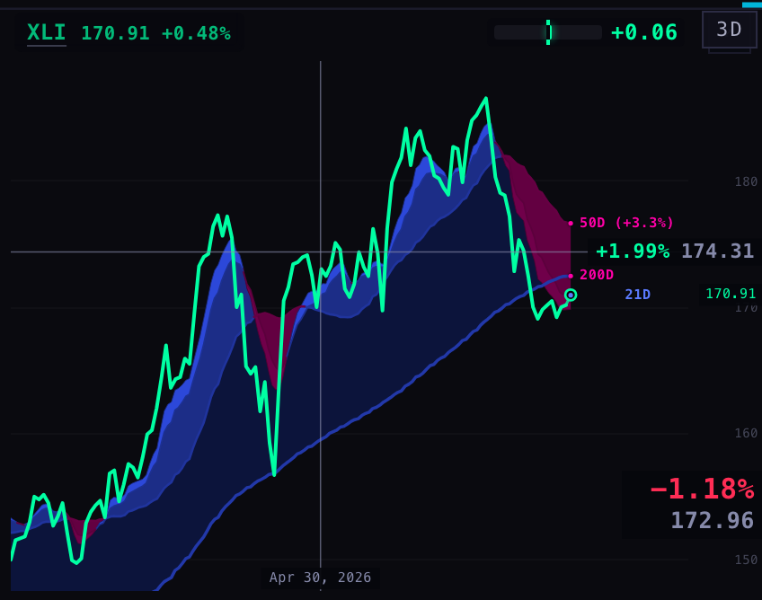
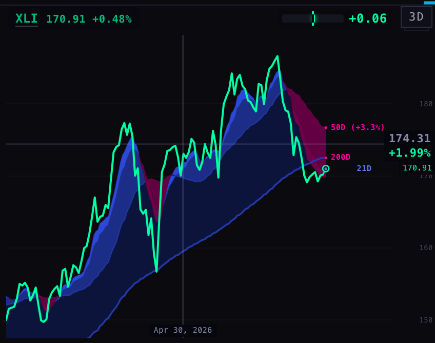
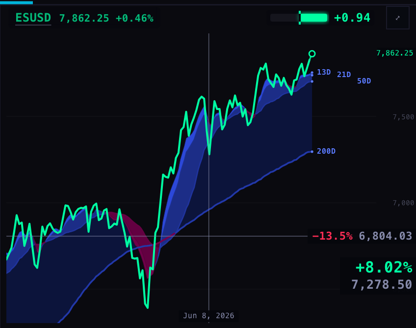
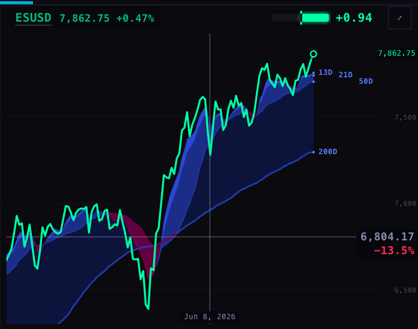
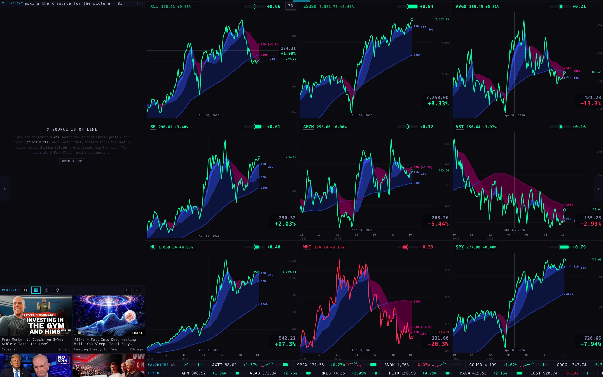
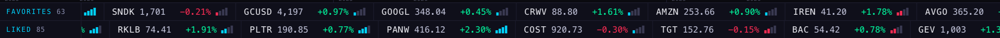
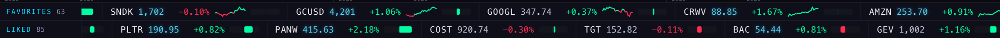
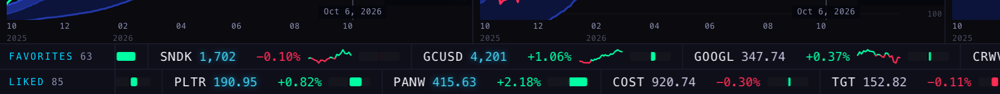

Station S16 — the chart hover and the tape marks
6 Oct 2026 · branch station/s16-hover-tapes-20261006 · not deployed · pictures from a hidden browser at 1680 × 1050
1 · The hover on XLI


2 · The hover on ESUSD



3 · The tapes



PAGE SPECS
- What the lower label was. The corner readout: a box fixed in the bottom-right corner of every chart, showing that chart's price on the hovered date and the percent from that date to now. On the chart under the pointer it sat below the pointer's own label (the level's price and how far that level is from the current price), so one chart showed two prices and two different percents.
- What changed. One label per chart. The chart under the pointer keeps only the pointer's label, with the percent under the price. The other charts keep only the corner readout (their price on that date, and the percent since), also price first, percent under it.
- When the percent moved. 28 Sep (N10): price on the line, percent under it — the layout you remember. 29 Sep (S1): moved to the fixed corner with the percent on top. 1 Oct (S5): the corner was given the "since that date" reading and a new one-row label was added on the pointer's line with the percent on the left. That one-row label was 97 px wide on XLI and 111 px on ESUSD; the two-row label is 50 px and 63 px.
- The battery. It is the same Geiger bar that sits beside every chart's name: zero in the middle, green growing right for a positive reading, red growing left for a negative one. Same reading and same functions as the chart, so a name's bar on the tape and on its chart always agree. It is 37 × 8 px (as tall as the tape's capital letters). It is not volume.
- The line (FAVORITES only). 15-minute bars from the chart API. It starts at today's 09:30 New York open and runs to the newest bar; before 09:30 it shows the day's bars so far. Green where the price is above the open, red where it is below. Re-read every five minutes. A name the chart API does not serve has no line.
- Fonts. The tapes use the same type family as the whole Station (SF Mono first). They read differently because they are set at 11 px in normal case; the top bar is 8.5 px capitals and the chart labels are 7–13 px.
- What could be wrong. The battery is coloured by the Geiger reading's sign, not by the day's price change (the brief said "daily up green, down red"); the percent and the line beside it follow the day. FAVORITES cells are wider now (about 240 px, was 170), so about five names show at once instead of seven.
- Not done. No phone picture (a phone carries no tapes); the X pane is offline in a hidden browser; nothing deployed.